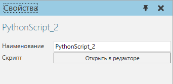
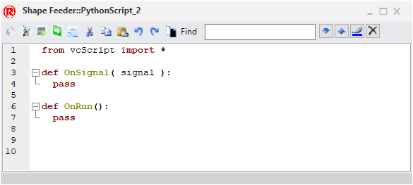
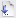
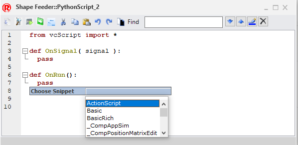
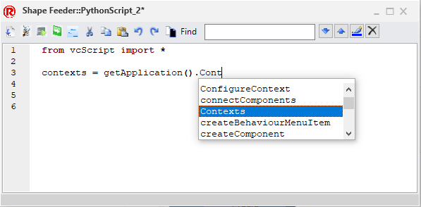
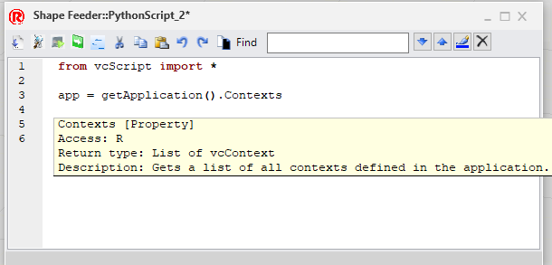

Сценарий Python позволяет вам написать сценарий для управления компонентами, командами и приложением с использованием языка программирования Python (без стеков, версия 2.7).

Свойства
Название |
Описание |
|---|---|
Наименование |
Определяет наименование сценария. |
Скрипт |
Позволяет просматривать и редактировать сценарий в редакторе. |
Редактор
Для доступа к редактору скриптов сделайте одно из следующих действий:
·На панели Диаграмма компонента, Дерево узлов компонента, найдите поведение скрипта Python, которое вы хотите изменить, а затем дважды щелкните это поведение.
·На панели Свойства, нажмите Открыть в редакторе.
Редактор сценариев отображает номера строк, параметры развертывания/свертывания блоков кода и панель инструментов.

Название |
Описание |
|---|---|
Компилировать |
 Компилирует скрипт в байт-код Python, который затем может выполняться приложением. То есть вы сохраняете скрипт, и это всегда нужно делать перед запуском симуляции. Примечание: при компиляции сообщения об ошибках и любых исключениях будут напечатаны на панели вывода, а скрипт будет автоматически скомпилирован при выходе из его редактора. |
Отладка |
Отслеживает выполнение сценария во время симуляции, чтобы вы могли видеть, какая строка кода выполняется в данный момент. Как правило, эта команда используется для отладки скрипта (поиск и устранение ошибок), а также для понимания того, как скрипт работает в зависимости от условий вашей планировки. |
Выполнить до курсора |
Запускает скрипт, пока не достигнет текущей строки курсора/каретки в редакторе. Как правило, запуск до курсора используется для отладки сценария, в котором вы проверяете, может ли сценарий достичь определенной строки кода. |
Выполнить 1 строчку кода |
Запускает скрипт так, чтобы выполнялась текущая строка кода, чтобы переместить скрипт на один шаг вперед в его выполнении. Как правило, пошаговое выполнение используется для прохождения последовательности сценария по одной строке за раз, чтобы проверить ожидаемые результаты. |
Фрагменты |
Позволяет вставить фрагмент кода в скрипт. |
Вырезать |
Удаляет выбранный код из скрипта, а затем копирует этот код в буфер обмена. |
Копировать |
Копирует выбранный код в скрипте в буфер обмена. |
Вставить |
Вставляет код из буфера обмена в скрипт. |
Отменить |
Отменяет последнее редактирование, выполненное в сценарии. |
Вернуть |
Возвращат последнее отмененное редактирование, выполненное в скрипте. |
Фон |
Переключает цвет фона и подсветку синтаксиса. |
Найти |
Позволяет искать в сценарии элементы, соответствующие ключевым словам в поле поиска. |
Найти следующий |
Перемещает курсор к следующему результату поиска в сценарии. |
Найти предыдущий |
Перемещает курсор к предыдущему результату поиска в скрипте. |
Выделить все совпадения |
Выделяет все результаты поиска в скрипте. |
Очистить посветку |
Удаляет выделение, назначенное результатам поиска в скрипте. |


Фрагменты
Исходное содержимое редактора содержит фрагмент кода, позволяющий использовать свойства, методы и события поведения скрипта:
from vcScript import *
def OnSignal( signal ): pass
def OnRun(): pass |
Если текстовая область активна, вы можете нажать CTRL+J, чтобы вставить фрагмент кода.

Автозаполнение
Редактор позволяет использовать автозаполнение для определенных типов случаев. Например, если текстовая область активна, вы можете нажать CTRL+ПРОБЕЛ, чтобы отобразить параметры завершения строки кода.

Если вы используете автозаполнение, вы можете прочитать документацию о добавленном элементе.
